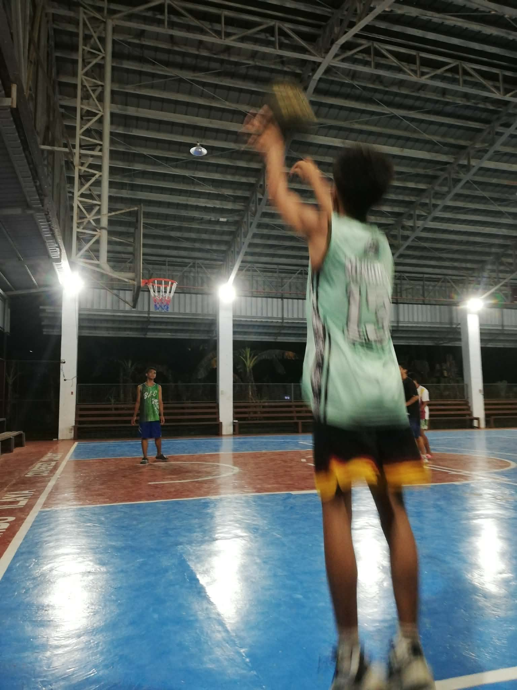

THE PERSONAL BLOG · VOL. 02
A life in
motion.
Hi, I’m Charles A Aala. This is my corner of the internet for the sports I love, the places I explore, and the little moments worth keeping.
01Curiosity, consistency
and enjoying the journey.
and enjoying the journey.

PERSONAL
COLLECTION ✳
COLLECTION ✳
A LITTLE CORNER OF MY WORLD
OFF THE CLOCK
Things that move me.


NOTES FROM MY WORLD